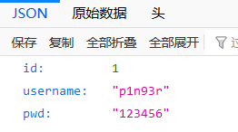
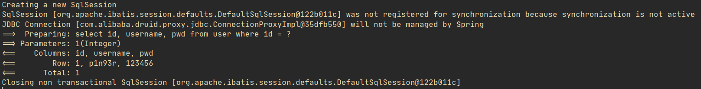
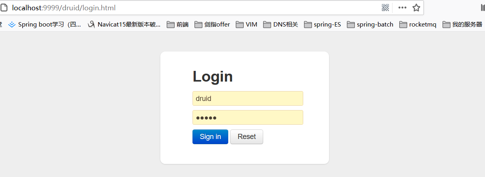
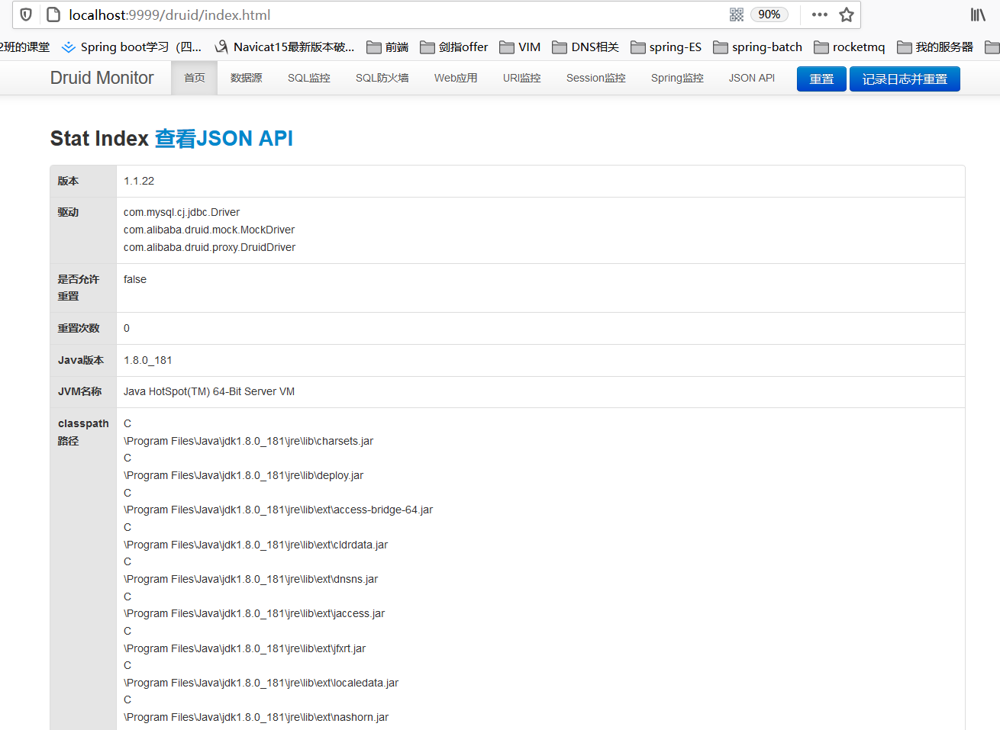

Spring访问数据库

文章目录
SpringBoot整合Mybatis和Druid
引入依赖
1 2 3 4 5 6 7 8 9 10 11 12 13 14 15 16 17 18 19 20 |
<!--mybatis-->
<dependency>
<groupId>org.mybatis.spring.boot</groupId>
<artifactId>mybatis-spring-boot-starter</artifactId>
<version>1.3.2</version>
</dependency>
<!--mysql-->
<dependency>
<groupId>mysql</groupId>
<artifactId>mysql-connector-java</artifactId>
<scope>runtime</scope>
</dependency>
<!--druid数据库连接池-->
<dependency>
<groupId>com.alibaba</groupId>
<artifactId>druid-spring-boot-starter</artifactId>
<version>1.1.22</version>
</dependency> |
Notice： 使用了druid数据库连接池
编写配置文件
在application.properties文件中写入如下配置文件：
1 2 3 4 5 6 7 8 9 10 11 12 13 14 15 16 17 18 19 20 21 22 23 24 25 26 27 28 29 30 31 32 33 34 35 36 37 38 39 40 41 42 43 44 45 46 47 48 49 50 51 52 53 54 55 56 57 58 |
# **************************************应用端口************************************ server.port=9999 # *********************************datasource配置*********************************** spring.datasource.url=jdbc:mysql://localhost:3306/test?useUnicode=true&characterEncoding=UTF-8&allowMultiQueries=true&serverTimezone=UTC&useSSL=false spring.datasource.username=root spring.datasource.password=123456 spring.datasource.driverClassName=com.mysql.cj.jdbc.Driver # **********************************mybatis配置************************************* mybatis.type-aliases-package=com.example.springdemo.domain mybatis.mapper-locations=classpath:mapper/*.xml mybatis.configuration.log-impl=org.apache.ibatis.logging.stdout.StdOutImpl # *****************************配置druid数据库连接池********************************** spring.datasource.type=com.alibaba.druid.pool.DruidDataSource #初始化时建立物理连接的个数。 spring.datasource.druid.initial-size=5 #最大连接池数量 spring.datasource.druid.max-active=20 #最小连接池数量 spring.datasource.druid.min-idle=5 #获取连接时最大等待时间，单位毫秒 spring.datasource.druid.max-wait=3000 #是否缓存preparedStatement，也就是PSCache,PSCache对支持游标的数据库性能提升巨大，比如说oracle,在mysql下建议关闭。 spring.datasource.druid.pool-prepared-statements=false #要启用PSCache，必须配置大于0，当大于0时，poolPreparedStatements自动触发修改为true。在Druid中，不会存在Oracle下PSCache占用内存过多的问题，可以把这个数值配置大一些，比如说100 spring.datasource.druid.max-open-prepared-statements= -1 #配置检测可以关闭的空闲连接间隔时间 spring.datasource.druid.time-between-eviction-runs-millis=60000 # 配置连接在池中的最小生存时间 spring.datasource.druid.min-evictable-idle-time-millis= 300000 spring.datasource.druid.max-evictable-idle-time-millis= 400000 # *******************************配置druid统计*************************************** #监控统计的stat,以及防sql注入的wall spring.datasource.druid.filters= stat,wall #Spring监控AOP切入点，如x.y.z.service.*,配置多个英文逗号分隔 spring.datasource.druid.aop-patterns=com.example.springdemo.service.* #是否启用StatFilter默认值true spring.datasource.druid.web-stat-filter.enabled= true #添加过滤规则 spring.datasource.druid.web-stat-filter.url-pattern=/* #忽略过滤的格式 spring.datasource.druid.web-stat-filter.exclusions=*.js,*.gif,*.jpg,*.png,*.css,*.ico,/druid/* #是否启用StatViewServlet默认值true spring.datasource.druid.stat-view-servlet.enabled= true #访问路径为/druid时，跳转到StatViewServlet spring.datasource.druid.stat-view-servlet.url-pattern=/druid/* # 是否能够重置数据 spring.datasource.druid.stat-view-servlet.reset-enable=false # 需要账号密码才能访问控制台，默认为root spring.datasource.druid.stat-view-servlet.login-username=druid spring.datasource.druid.stat-view-servlet.login-password=druid #IP白名单 spring.datasource.druid.stat-view-servlet.allow=127.0.0.1 #IP黑名单（共同存在时，deny优先于allow） spring.datasource.druid.stat-view-servlet.deny=10.0.0.1 |
测试
① 创建数据库表
1 2 3 4 5 6 7 |
create table user
(
id int auto_increment
primary key,
username varchar(50) not null,
pwd varchar(100) not null
); |
② 创建User实体
1 2 3 4 5 6 7 8 9 10 |
@Data
public class User implements Serializable {
private Integer id;
private String username;
private String pwd;
private static final long serialVersionUID = 1L;
} |
③ 创建mapper及其对应的mapper.xml
1 2 3 4 5 6 7 8 9 10 11 12 13 14 15 16 17 18 19 20 21 22 23 24 25 26 27 28 29 30 31 32 33 34 35 36 37 38 39 40 41 42 43 44 45 46 47 48 49 50 51 52 53 54 55 56 57 58 59 60 61 62 63 64 65 66 67 68 69 70 71 72 73 74 75 76 77 78 79 80 |
//mapper文件
@Repository
public interface UserMapper {
int deleteByPrimaryKey(Integer id);
int insert(User record);
int insertSelective(User record);
User selectByPrimaryKey(Integer id);
int updateByPrimaryKeySelective(User record);
int updateByPrimaryKey(User record);
}
//mapper.xml
<?xml version="1.0" encoding="UTF-8"?>
<!DOCTYPE mapper PUBLIC "-//mybatis.org//DTD Mapper 3.0//EN" "http://mybatis.org/dtd/mybatis-3-mapper.dtd">
<mapper namespace="com.example.springdemo.mapper.UserMapper">
<resultMap id="BaseResultMap" type="com.example.springdemo.domain.User">
<id column="id" jdbcType="INTEGER" property="id" />
<result column="username" jdbcType="VARCHAR" property="username" />
<result column="pwd" jdbcType="VARCHAR" property="pwd" />
</resultMap>
<sql id="Base_Column_List">
id, username, pwd
</sql>
<select id="selectByPrimaryKey" parameterType="java.lang.Integer" resultMap="BaseResultMap">
select
<include refid="Base_Column_List" />
from user
where id = #{id,jdbcType=INTEGER}
</select>
<delete id="deleteByPrimaryKey" parameterType="java.lang.Integer">
delete from user
where id = #{id,jdbcType=INTEGER}
</delete>
<insert id="insert" keyColumn="id" keyProperty="id" parameterType="com.example.springdemo.domain.User" useGeneratedKeys="true">
insert into user (username, pwd)
values (#{username,jdbcType=VARCHAR}, #{pwd,jdbcType=VARCHAR})
</insert>
<insert id="insertSelective" keyColumn="id" keyProperty="id" parameterType="com.example.springdemo.domain.User" useGeneratedKeys="true">
insert into user
<trim prefix="(" suffix=")" suffixOverrides=",">
<if test="username != null">
username,
</if>
<if test="pwd != null">
pwd,
</if>
</trim>
<trim prefix="values (" suffix=")" suffixOverrides=",">
<if test="username != null">
#{username,jdbcType=VARCHAR},
</if>
<if test="pwd != null">
#{pwd,jdbcType=VARCHAR},
</if>
</trim>
</insert>
<update id="updateByPrimaryKeySelective" parameterType="com.example.springdemo.domain.User">
update user
<set>
<if test="username != null">
username = #{username,jdbcType=VARCHAR},
</if>
<if test="pwd != null">
pwd = #{pwd,jdbcType=VARCHAR},
</if>
</set>
where id = #{id,jdbcType=INTEGER}
</update>
<update id="updateByPrimaryKey" parameterType="com.example.springdemo.domain.User">
update user
set username = #{username,jdbcType=VARCHAR},
pwd = #{pwd,jdbcType=VARCHAR}
where id = #{id,jdbcType=INTEGER}
</update>
</mapper> |
④ 编写控制器UserController
1 2 3 4 5 6 7 8 9 10 |
@RestController
public class UserController {
@Resource
UserMapper mapper;
@RequestMapping("/api/test")
public User getUsers(){
return mapper.selectByPrimaryKey(1);
}
} |
⑤ 访问测试结果


⑥ 访问druid的web控制台


文章作者 P1n93r
上次更新 2020-09-03